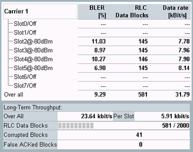

The results of the BLER measurement are shown in the left part of the tab. They are described briefly below.

For each slot, the configured DL power is displayed for information (in the figure either -80 dBm or off).
Block error ratio, erroneous RLC data blocks received by the MS since the start of the measurement.
The BLER is presented as absolute number or as percentage (relative to the total number of received RLC data blocks). To switch between the display modes, use the "Results" hotkey accessible via the "Display" softkey.
The BLER is measured per timeslot. The "Over all" result in "Absolute" mode is the sum over all timeslots. In "Percentage" mode, it is the weighted average over all timeslots. It means, that the sum of (BLER in each slot multiplied with RLC data blocks in the slot) divided by the total number of RLC data blocks.
Indicates the number of RLC data blocks received by the MS per timeslot and in total ("Over all") since the start of the measurement
The RLC data rate corresponds to the net data transmission rate. It considers the RLC data blocks that are correctly received since the start of the measurement so that the data rate decreases as the BLER increases. Besides, the data rate depends on the number of bits per block and thus on the coding scheme; see "Bits Per Radio Block / RLC Data Block".
At the very beginning of a measurement, the measured data rates fluctuate and can even show data rates above the theoretical maximum value. For details, see "Multiframe Structure and Data Rate".
Furthermore during the BLER measurement the R&S CMW periodically transmits a packet system information message on one of the configured slots. This message is not recognized as a data block. Therefore it is not counted as RLC data block, but it requires about 20 ms transmission time. This interval is included in the total measurement time. In other words, the measurement time remains the same although periodically a data block is omitted, which results in a slightly lower data rate than theoretically possible.
The data rate is determined for each timeslot separately. The "Over all" result is the sum of the data rates in all enabled timeslots.
Average overall RLC data rate since the start of the measurement ("Over All") and divided by the number of active slots ("Per Slot").
The long-term throughput is calculated from the number of transmitted blocks and the related transmission time. All blocks from the beginning of the current measurement cycle up to the lower end of the DL window are counted. In particular, up to the first gap which is caused by the oldest block that was acknowledged to be faulty by the MS.
Blocks sent after this gap are not relevant for the count, even if they are received correctly. It usually causes the long-term throughput to be a little lower than the theoretical maximum of data transmission.
The effects described for the "Data rate" result apply also to this result (fluctuation due to multiframe structure and lower throughput due to packet system information message).
- For EGPRS with MCS-9: 20 kbps per timeslot
- For EGPRS2-A with DAS-12: 33 kbps per timeslot
Number of evaluated RLC data blocks. For configuration of the total number of RLC data blocks to be evaluated, see "RLC Data Block Count".
Number of corrupted blocks the R&S CMW generates. For configuration of the corrupted data rate, see "BCS Data Corruption Rate".
Number of corrupted blocks reported by the MS incorrectly as fault free.